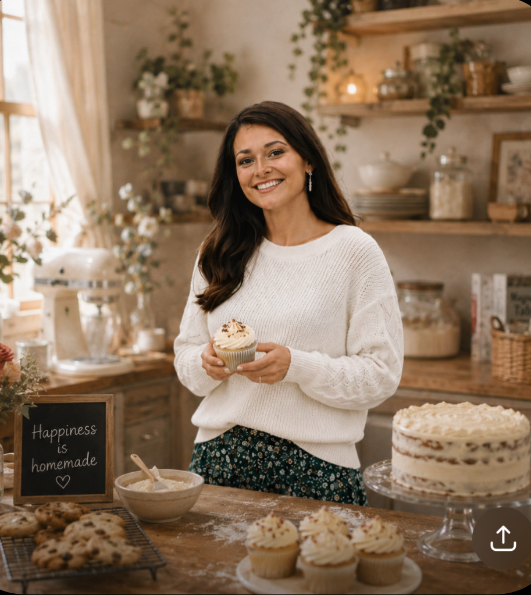

Meet Corrine

Corrine is a passionate home baker who loves creating beautiful cakes, cupcakes, cookies, and homemade desserts for every occasion. She takes pride in using quality ingredients and adding personal touches that make each dessert unique.
Whether you're celebrating a birthday, wedding, baby shower, holiday, or another special event, Corrine works closely with her customers to create custom desserts that are both delicious and memorable. Every order is carefully made with creativity, attention to detail, and a love for baking.